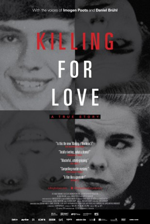

#8184 Das Versprechen - Erste Liebe lebenslänglich
Alternativ: Killing for Love (Englischer Titel)
 
 IMDB-Wertung: 7.2 / 10
IMDB-Wertung: 7.2 / 10  Metascore: 0
Metascore: 0 
The gruesome murders of Nancy and Derek Haysom in 1985 were an international media sensation. The Haysoms were wealthy, respected members of Virginia society, and the murder conviction of their daughter Elizabeth and her German boyfriend Jens Soering sent shock waves through the rural community of Bedford County. Elizabeth and Jens had met in a university program for high achieving students. She was a product of European boarding schools, he was the son of a diplomat. After being arrested in London, England, for passing bad checks in 1986, they were both extradited to the United States and have now spent over 30 years behind bars. This beautifully crafted film reveals a mismanaged, or perhaps completely corrupted, judicial process. This was the first criminal trial held in front of TV cameras - the first high-profile, international case tried in a small town. Investigations over the past 3 years have turned up stunning evidence that was previously suppressed or deemed inadmissible. ...
Jahr: 2016
Dauer: 118 Minuten
FSK: 12
Land: Deutschland Studio: Farbfilm-VerleihTonspuren:
Untertitel:
Auflösung: 1080p (1920x792) Größe: 6318 MB
Genre: Krimi, Dokumentation
Regisseur: Karin Steinberger, Marcus Vetter
Drehbuch: Atmen Kelif
Soundtrack: Michele Gentile, Sven Kaiser
Darsteller:
 Imogen Poots als Elizabeth Haysom
Imogen Poots als Elizabeth Haysom Daniel Brühl als Jens Söring
Daniel Brühl als Jens Söring- Jens Söring als Himself
 Larry King als Himself (archive footage)
Larry King als Himself (archive footage)- Chuck Reid als Himself - Former Investigator Bedford County Sheriff's Department
- Ricky Gardner als Himself - Lead investigator Bedford County Sheriff's Department
- Elizabeth Haysom als Herself (archive footage)
- Jim Updike als Himself (archive footage)
- Carlos Santos als Himself - Journalist
- Dave Watson als Himself - Private Investigator
- Gail Ball als Herself - Jens Söring's Lawyer
- Ed Sulzbach als Himself, Former FBI Psychological Profiler
- Rich Zorn als Himself - Former Senior Assistant Deputy Attorney General
- Robert Showalter als Himself (archive footage)
- Ken Englade als Himself, author of 'Beyond Reason: The True Story of a Shocking Double Murder' (archive footage)
- Howard Haysom als Himself, Elizabeth Haysom's brother (archive footage)
- Richard Haysom als Himself, Elizabeth Haysom's brother (archive footage)
- Richard A. Neaton als Himself, Jens Söring's attorney (archive footage)
- Klaus Söring als Himself, Jens Söring's father (archive footage)
- Kai Söring als Himself, Jens Söring's bother (archive footage)
- Ken Beever als Himself, detective inspector, London Metropolitan Police (archive footage)
- Terry Wright als Himself, detective constable, London Metropolitan Police (archive footage)
- Tom Elliott als Himself - Catholic Deacon and Chaplain
- Gail Marshall als Herself - Soering attorney, former Deputy Attorney General of Virginia
- William Sweeney als Himself - Judge
- Steven Rosenfield als Himself, Jens Soering's lead attorney
- Tony Buchanan als Himself
- Timothy M. Kaine als Himself (archive footage)
- Robert McDonnell als Himself (archive footage)
Datei: X:\Dokumentationen\Dokus(A-Z)\Versprechen - Erste Liebe lebenslänglich, Das (2016, FSK12, 1920x792).mkv seit 07.02.2018
Festplatte: HD Serien(SU-Z)+Dokus+Musik
 Es gibt insgesamt 34 Filme in der Gruppe 'Dokumentationen\Dokus(A-Z)'
Es gibt insgesamt 34 Filme in der Gruppe 'Dokumentationen\Dokus(A-Z)'